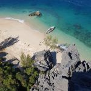
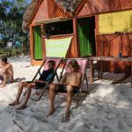
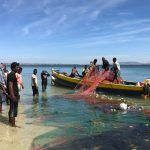
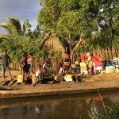
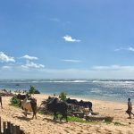
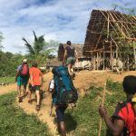

Ganz herzlichen Dank an das ganze Priori Team für die perfekte Organisation
„Hallo Frau Penning,
Es ist leider bereits eine Weile her und der Alltag hat uns schon wieder fest im Griff, die Erinnerungen sind aber immer noch sehr präsent. Die Reise war eine grosse Geschichte für uns. Wir haben extrem vieles gesehen, erlebt und ganz viele Eindrücke mitgenommen.
Die Organisation war perfekt, es hat alles geklappt wie geplant und da wo es nicht ganz perfekt lief, hat uns PRIORI Reisen vor Ort super unterstützt (Gepäck, das nicht angekommen ist etc.)
1. Woche:
Das Trekking war ein super Erlebnis und die Flexibilität von Augustin hat vieles dazu beigetragen. Er hat den Tagesablauf automatisch so arrangiert, dass es zu unserem Tempo gepasst hat. Somit sind wir etwas schneller vorangekommen als ursprünglich geplant. Dies hat uns ermöglicht noch einen Tag die Insel Nosi Manga be bei Maroantsetra zu besuchen, was sehr lohnend war, inbesondere wegen der Tierwelt. Die Stimmung war die ganze Zeit über super, es wurde viel gelacht, diskutiert, ausgetauscht, beobachtet, so dass wir ganz vieles mitbekommen haben, nicht nur von der Natur sondern auch über Kultur, Politik, Geschichte etc. Das Essen war ausserordentlich gut und mit viel Aufwand und liebe zubereitet.
2. Woche:
Rückreise nach Tana und die Weiterreise nach Diego haben gut geklappt (keine Flugverspätungen; Taxiservice durch PRIORI). Wir haben ein paar schöne Tage im Hotel Lakana in Ramena an einem wunderbaren Strand genossen. Die nahegelegenen Surfstrände haben wir an 2 Tagen zum Windsurfen genutzt.
3. Woche:
Diese Woche haben wir auf Nosi Hara verbracht. Die Insel ist einmalig und hat unsere Erwartungen übertroffen. Die Einfachheit und mit viel Liebe aufgebaute Infrastruktur hat das Seinige zu einem einmaligen Erlebnis beigetragen. Die Kletterei war super, die Korallen und Fischwelt einmalig, die Erlebnisse beim Fischen mit der Crew ebenso, am besten aber sprechen die Bilder.
Ganz herzlichen Dank an das ganze PRIORI Team und speziell nochmals an Augustin und seine Familie für das Ermöglichen dieses grossartigen Erlebnis.
Viele Grüsse“
Familie H.
-

-

-

-

-

-
